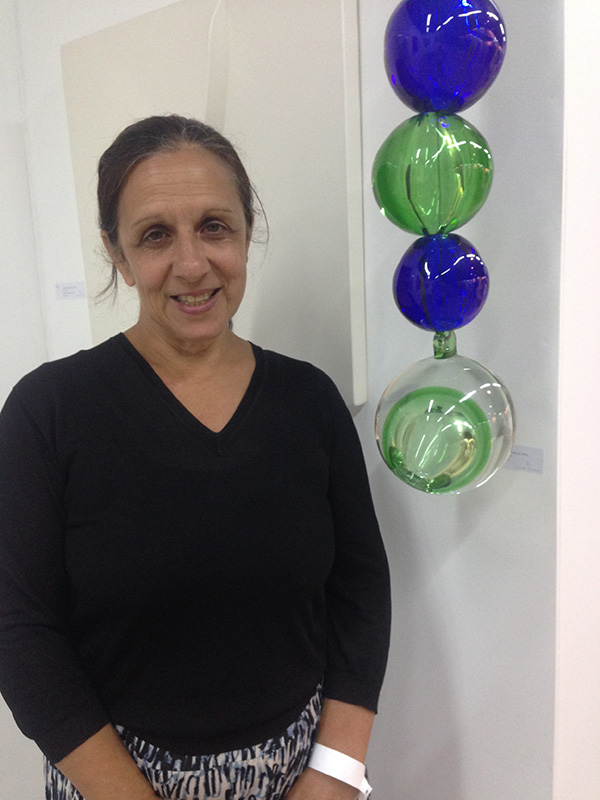

ANTECEDENTES PROFESIONALES de Georgina Gil

Estudios cursados:
- Estudios Primarios y Secundarios Colegio Suizo Jacques Dalcroze
- Universitarios UBA Diseño Gráfico
ACTIVIDAD PROFESIONAL
- 1997/2000 Fundación Proa del Grupo Techint. Departamento de Comunicación, Gráfica y Multimedia: revista Art
Proa, Catálogos internacionales, desarrollos interactivos, señalética
- 1999/2003 Ediciones para el Fondo Nacional de las Artes y para Academia Nacional de Bellas Artes.
- 2006/2007 Ediciones para el Centro Cultural Recoleta (libro Jacques Bedel), Presas, Carlos Gallardo (Museo
Nacional de Bellas Artes) y ediciones para la Academia Nacional de Bellas Artes.
- 2007/2009 ediciones para Time Out Ltd.
- 2010 Grafica para la Bienal Borges Kafka (Cancillería Argentina /Gobierno de la Ciudad, Embajador Juan
Eduardo Flemming). Comunicación Gráfica para Endeavor Argentina
- 2011 Libro Edición Especial, El diseño Argentino para el envío a Frankfurt para la Cancillería Argentina.
Edición de Temas de la Academia para la ANBA. Centro Cultural del Bicentenario de Santiago del Estero. Museo
de Arte Tigre.
- 2012 Edición de Temas de la Academia para la ANBA. Centro Cultural del Bicentenario de Santiago del Estero.
- 2013 Edición de Temas de la Academía Nº 11, para la ANBA. Murvi SA, mosaico veneciano, acciones de MKT.
Secretaria de Cultura Nación edición y gráfica editorial. Idea, producción ejecutiva, montaje de la muestra
Diseño Argentino Contemporáneo en el Museo de Arte Amalia Lacroze de Fortabat. Desarrollo de contenidos para
la agenda del portal de Disney Babble para México, San Pablo y Buenos Aires. Desarrollo de páginas web del
Cardo Polo Club y Maman Fine Art de Miami. Merchandising, Usbs personalizados para Sancor Seguros.
- 2014 Edición de Temas de la Academía Nº 12, para la ANBA. Murvi SA, mosaico veneciano, acciones de MKT.
Premio Murvi, de carácter nacional que convoca artistas y diseñadores que premia obra inéditas realizadas en
mosaico veneciano, junto al Arq.Ricardo Blanco.
Desarrollo de contenidos para la agenda del portal de Disney Babble para México, San Pablo y Buenos Aires.
Estrategias de Marketing on line para diversas empresas como Google Partner.
Imagen y comunicación Estrategica de Mangiatini Aberturas, desarrollo de pagina web y campaña en Google Ads
y Facebook.
- 2015 Edición de Temas de la Academía Nº 13, para la ANBA. Murvi SA, mosaico veneciano, acciones de MKT.
Premio Murvi, de carácter nacional que convoca artistas y diseñadores que premia obra inéditas realizadas en
mosaico veneciano, junto al Arq.Ricardo Blanco.
Imagen y comunicación Estrategica de Mangiatini Aberturas, desarrollo de pagina web y campaña en Google Ads
y Facebook. / Imagen y comunicación Estrategica de Publiredes, desarrollo de pagina web y campaña en Google
Ads y Facebook.
Maman Fine Art de Miami, campaña en redes, avisos Miami Symphony Orchestra. Maman fine Art Buenos Aires,
avisos MALBA, Herald, Catalogo Colectivo y Singular III.
- 2016 Edición de Temas de la Academía Nº 14, para la ANBA. Murvi SA, mosaico veneciano, acciones de MKT.
Premio Murvi, de carácter nacional que convoca artistas y diseñadores que premia obra inéditas realizadas en
mosaico veneciano, junto al Arq.Ricardo Blanco.
Imagen y comunicación Estrategica de Mangiatini Aberturas, desarrollo de pagina web y campaña en Google Ads
y Facebook. Stand Sustentabilidad en Puertos-Escobar y Charlas Arquitectos sobre sustentabilidad / Imagen y
comunicación Estrategica de Publiredes, campaña en Google Ads y Facebook.
Maman Fine Art de Miami, campaña en redes. Maman fine Art Buenos Aires, Catalogo Luis Wells y Maman 15 años.
DATOS PERSONALES
- DNI 14.432.746
- CUIT 227-14432746-8
DATOS DE CONTACTO
- Av. Caseros 2714 CABA / Distrito Tecnológico
- Celular Ph. +54911 3254 4689
- geo@likemedia.com.ar
QUE ME APASIONA
Me encanta la musica, soy adicta al algoritmo de Spotify, tenemos una relación estrecha, lo dejo hacer y me
devuelve con novedades, selecciones, yo lo alimento con likes y playlists
Me encanta la astrología, se poco pero creo que en otra vida leia el futuro.
Me encanta los aromas, las hierbas medicinales, estoy investigando el tema.
Tambien me encanta editar contenido, asi que si queres contactame
Llamame y conversamos sobre tu proyecto